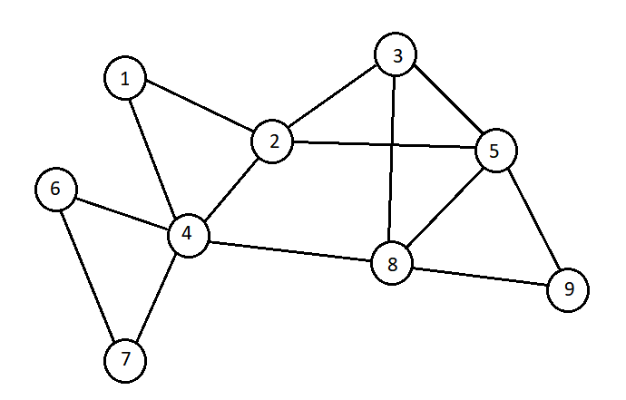

Probleme teoria grafurilor
Probleme grafuri neorientate:
1. Rezolvă următoarele cerințe pe graful din figura alăturată:
- Enumeră nodurile de grad maxim
- Scrie listele de adiacență ale grafului dat
- Scrie un ciclu elementar de lungime maxima
- Care este numărul minim de muchii de eliminat astfel încât graful rezultat să fie eulerian? Precizează o posibilă soluție.
